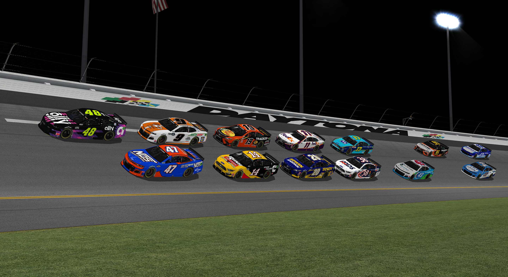

Post-install optimizations
- Updating the graphics configurationOpen your rend_dx.ini file in your Nascar Racing 2003 Season folder. Set the TextureSetSize value to -1. Set the AnisotropicLevel to 0.
- NVIDIA / AMD enhancementsOpen your NVIDIA or AMD control panel and set the texture filtering quality, anistrophic filtering, and anti-aliasing settings to fit your desired qualty and performance.
- 4GB patchNr2003 is limited to 2GB of RAM. Install the 4GB patch to double the RAM available to the game to 4GB.
Troubleshooting
- Remove DLLsRemove the D3D8.dll or D3D9.dll, DirectX 8 games will load that file automatically if it's located where the executable is (same with D3D9.dll and DirectX 9).
- Compress car and pit crew texturesMake sure all of your cars are compressed to 2048 or lower. Compress pit crews to 1024 or lower. You can reduce car file sizes significantly using WinMip and compression.
- Disable Solar effectsDisabling solar effects gives a good performance boost. It appears that modern graphics drivers aren't able to draw this effect as efficiently as in the past.
- Reduce the number of soundsSounds are important for the game, but can cost frames. Reduce the number of sounds played for additional frame rate gains.

Tips for track makers
- Keep most textures to 1024pxTextures up to 4096 are supported but should be used sparingly. Prefer 1024px sized mips and avoid alpha channels where possible. Textures using an invisible color are much smaller than those with an alpha channel.
- Limit the number of textures per modelSandbox will stop loading 3dos and TSDs if the number of project files becomes too great. Try to texture any custom 3d objects with the lowest amount of textures possible.
- Keep poly counts below 500Most users will have graphical artifacts and distorted models beyond 650 object faces. BBMC uses a soft limit of 500 faces to improve performance. Where possible, break up larger models into pieces of 300 faces or less.
- Combine single objects into groupsWherever possible you should combine objects like lights or trees to keep the number of objects in your sandbox project low. Sandbox will stop loading your objects or even the project if the number of object placements becomes too great.